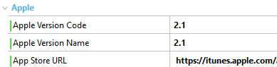

HowTo: Versioning Your Native Mobile Application
Application versioning is a critical component of its maintenance. End users always need specific information about the application version that is installed on their devices and which upgrade version is available for installation.
Also, the application may need to query the system for your application's version, to determine compatibility and identify dependencies. For example, the publishing service may need to check the application version to determine compatibility and establish upgrade/downgrade relationships. The native mobile apps generated by GeneXus are installed on the devices, so when you are about to launch a new version of your app you take the risk that your older version quits working or starts failing because some changes have been made on the server side of your application.
A little background
The core of every GeneXus Native Mobile application is the Flexible Client. This means that the app can detect whether the server has a newer or updated version of the metadata and then begin to operate using that version.
Flexible Clients bring many advantages:
- You can update some parts of your app without the need to wait for the entire approval stages of the app stores.
- Users of older clients are advised that an update is needed and automatically start to update the client version.
However, this does not cover every scenario. For example, when newer versions introduce some changes in binary code, such as a new User Control, the Flexible Client is not going to be able to update itself to the newer version. In this case, a "Not Supported Client scheme" situation is going to be applied. To sum up, if the metadata version needs to be updated (a minor change occurs), as a developer you want your app to automatically start updating. On the other hand, if there is a scenario of "Not Supported client scheme" (a major change occurs), the best option is that the application redirects the user to the store to download the most recent version.
This document explains how versioning is used in GeneXus for Native Mobile by developing a simple example.
Main components
There are three properties per platform in the Native Mobile Main object level involved in the versioning process.
- Version code
A string value composed of two numbers X and Y separated by a '.' (period) that represents the application version, relative to others. The X indicates a major upgrade and Y a minor upgrade. For example, a value of "2.4" means that the application was upgraded twice in a major way and four times in a minor way relative to the major version.
- Version name
A string value that represents the release version of the application as it is shown to the end user. For simplicity, it should have the same value as the above property followed by a period and a build number (e.g. "2.4.126").
- Where the application must be updated
A URL where the application can be downloaded (usually, a store) in case that the end user needs a major upgrade.
Let's see the behavior on each platform.
Android-specific
| Android Version Code property | Every time the developer publishes a newer version of the application (the *.apk file), an upgrade of this value is required by Google Play Store (or another store). Otherwise, it will display an error message like this: |
| Android Version Name property | The version which is displayed in the app details of the store. |
| Update URL property (1) | Refer to this document. |
Apple-specific
| Apple Version Code property | It has the same meaning as Android's version of this property after following the process of how to upgrade the application on the Apple App Store. |
| Apple Version Name property | It applies the same concept as Android's version of this property but only on the Apple App Store. |
| App Store URL | The URL of the iTunes website where the application is hosted. It takes the following aspect: https://itunes.apple.com/app/id<your_apple_app_identifier> (e.g. https://itunes.apple.com/app/id887880596) Where the Apple App ID is provided once the application is published (it can be queried on iTunes Connect). For advanced users, it can also be a custom URL pointing to a manifest.plist file as follows. itms-services://?action=download-manifest&url=<url_to_the_manifest.plist_file> The <url_to_the_manifest.plist_file> must be escaped (e.g. the URL http://www.my-domain.com/path/to/manifest.plist should be written as https%3A%2F%2Fwww.my-domain.com%2Fpath%2Fto%2Fmanifest.plist) |
Behavior when versioning
Minor change case
For minor changes or changes that the app can update itself, you can change the number after the '.' (period) as follows. This action will make the app in the device automatically update the metadata information.
| Current version | Newer version | ||
| Android case |
 |
 |
 |
| Apple case | |
Result
| Detect new version | Update finished | |
| Android case |
||
| Apple case |  |
Messages
The messages that inform the end-user that the application is being updated and that it has been updated when it finishes are customizable, by configuring the following messages in the Language objects in the KB:
- GXM_UpdatingApplication
- GXM_ApplicationUpdated
It is also possible, as from GeneXus 17 upgrade 4, to turn them off completely. To do that, set the value "(none)" (without the quotes) to these two messages.
Major change case
For major changes where the app must be upgraded by downloading it from the store, you can change the number before the '.' (period) as follows. This action will force the end user to redirect to the store by its URL and download the newer version of the app.
| Current version | Newer version | ||
| Android case |
|
|
|
| Apple case | |
 |
Result
| Detect new version | Redirect to the store | Start updating | |
|
Android case |
 |
 |
|
| Apple case |  |
 |
What does the device perform to verify if it has to update the application?
The device verifies in the server a file called:
- In Android: <main> .android.json
- In Apple: <main> .ios.json
that contains the version: {"minor": "0", "major": "1", "uri": ""}
The device checks the version of its json against the version of the json that is in the server and if they are different, the application is updated.
Take into account that if the deployment was performed with the Deployment Tool, you have to set the App Update property so that the metadata remains in the package.
Notes
(1) Replacement of Android Google Play URL property that enhanced the possibility of including other URL stores instead of just Google Play.
See also